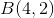
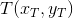
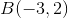
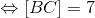

Distanța dintre două puncte în plan
Dacă avem două puncte în plan, notate  , , distanța dintre ele se referă la lungimea segmentului
, , distanța dintre ele se referă la lungimea segmentului ![[AB]](../../media/webbooks/672/5632/images/equations/xjlu2-mo868buspmukpl9w==.gif) .
.
Înainte de a discuta acest aspect în mod general, să luăm două cazuri particulare, și anume cele două puncte să aibă, pe rând, abscisele și ordonatele egale.
Cazul I:
În primul caz, vom lua punctele , respectiv , cu abscisele egale ( adică ).
Atunci, distanța dintre cele două puncte se va calcula astfel:
Exemplu:
Fie punctele  , . Să se reprezinte grafic aceste două puncte și să se calculeze distanța dintre ele.
, . Să se reprezinte grafic aceste două puncte și să se calculeze distanța dintre ele.
Soluție:
Cele două puncte le reprezentăm astfel:

Calculăm acum distanța dintre cele două puncte date, reprezentată pe graficul de mai sus prin dreapta de culoare roșie.
Aceasta o calculăm folosind relația :
![\begin{align*} \Leftrightarrow [AB]&=4 \end{align*}](../../media/webbooks/672/5632/images/equations/lckzh9nuinagiurfnbfu8q==.gif) .
.
Observație:
Observăm că segmentul determinat de punctele  , respectiv
, respectiv  este paralel cu axa ordonatelor,
este paralel cu axa ordonatelor,  .
.
Cazul II:
În al doilea caz, vom lua punctele , respectiv cu ordonatele egale ( adică ).
Atunci, distanța dintre cele două puncte se va calcula astfel:
Exemplu:
Fie punctele , . Să se reprezinte grafic aceste două puncte și să se calculeze distanța dintre ele.
Soluție:
Cele două puncte sunt reprezentate în figura următoare:

Folosind formula , distanța dintre cele două puncte este:
.
Observație:
Observăm că segmentul determinat de punctele , respectiv este paralel cu axa absciselor,  .
.
Cum se procedează în mod general:
În general, fiind date punctele și , distanța dintre acestea o calculăm în mai mulți pași după cum urmează:
- Fixăm pe grafic cele două puncte.
- Ducem paralele la axele de coordonate și aflăm punctul lor de intersecție.
- Figura formată este un triunghi dreptunghic.
- Lungimile catetelor le aflăm cum am discutat deja pe cazurile particulare anterioare ( Cazul I și Cazul II ).
- Lungimea ipotenuzei, care este de fapt lungimea segmentului căutat de noi, o calculăm cu ajutorul teoremei lui Pitagora.
Pentru a înțelege acești pași, urmărește cu mare atenție exemplul de mai jos.
Exemplu:
Fie punctele , respectiv . Să se reprezinte grafic aceste două puncte și să se calculeze distanța dintre ele.
Rezolvare:
Punctele date sunt reprezentate în figura de mai jos:

Pasul 1: am fixat cele două puncte și .
Pasul 2: cu culoarea verde am trasat paralelele la axele de coordonate, iar punctul lor de intersecție l-am notat cu .
Coordonatele punctului  sunt:
sunt:
- , deoarece , deci
 (conform cazului I);
(conform cazului I);
- , deoarece
 , deci (conform cazului II).
, deci (conform cazului II).
Pasul 3: Figura reprezintă un triunghi dreptunghic, cu .
Pasul 4: Calculăm lungimile catetelor.
- Cum , conform formulei de la Cazul I, avem:
.
- Cum , conform formulei de la Cazul II, avem:
.

Pasul 5: Calculăm lungimea segmentului  cu ajutorul teoremei lui Pitagora:
cu ajutorul teoremei lui Pitagora:
.
Așadar, distanța dintre punctele și este .
Aplicații
Exercițiul 1
- Să se reprezinte grafic punctele , , , , , .
- Să se calculeze perimetrul triunghiului , unde punctele , , respectiv
 au coodonatele de la subpunctul a. .
au coodonatele de la subpunctul a. .
Rezolvare:
- Reprezentăm grafic toate punctele date. Astfel, avem următoarea figură:

Exercițiu pentru cititor:
Să se specifice din ce cadrane fac parte punctele reprezentate în figura de mai sus.
- Pentru a calcula perimetrul triunghiului avem nevoie să cunoaștem lungimile laturilor triunghiului, adică distanța de la punctul la punctul , de la punctul la punctul și de la punctul la punctul .
Avem următoarea figură, unde am unit punctele: cu , cu și cu , pentru a forma triunghiul :

Deoarece punctele și au aceeași abscisă, distanța dintre ele este:
.
Deoarece și au aceeași ordonată, distanța dinte ele este:
.
Observăm că triunghiul obținut este unul dreptunghic.
Așadar, aplicând teorema lui Pitagora, aflăm distanța de la punctul la punctul , astfel:
.
Cunoscând lungimile tuturor laturilor triunghiului , perimetrul acestui triunghi este:
.
Exercițiul 2
Să se reprezinte în sistemul de coordonate ortogonal  punctele: , , , . Ce reprezintă figura geometrică care are vârfurile în punctele , , , respectiv
punctele: , , , . Ce reprezintă figura geometrică care are vârfurile în punctele , , , respectiv  ?
?
Rezolvare:
Punctele date sunt reprezentate în figura următoare:

Conform reprezentării grafice, se observă că .
Calculăm distanța dintre punctele și , respectiv dintre și  .
.
Ne situăm în Cazul II prezentat în pagina anterioară.
Folosind relația , obținem:
,
respectiv
.
Avem că .
Prin urmare, figura geometrică  reprezintă un paralelogram.
reprezintă un paralelogram.
Exercițiu pentru cititor:
Să se calculeze perimetrul paralelogramului , unde coordonatele vârfurilor sunt date de exercițiul 2.